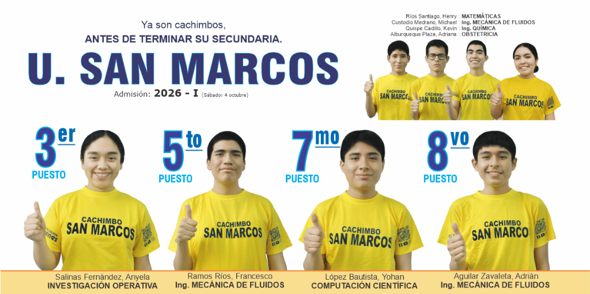
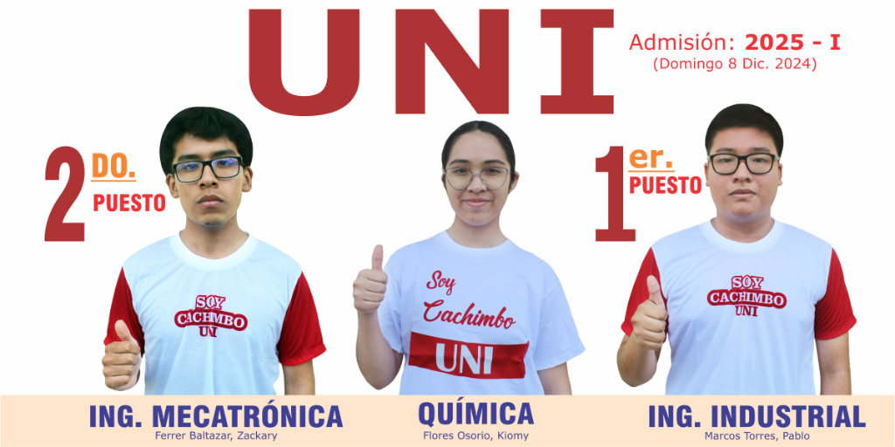
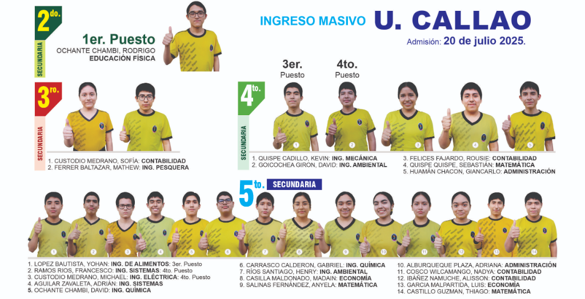

1
Plana Docente Especialista
Profesoras dinámicas, especializadas en su curso y enfocadas en el avance de cada niño.
Conoce la experiencia real de nuestros exalumnos e ingresantes a carreras altamente competitivas gracias a nuestro sistema de trabajo.

"El sistema de Genes me dio la disciplina, el seguimiento constante y una base preuniversitaria inquebrantable. Sentí que cada simulacro semanal y cada tutoría personalizada me acercaban de verdad a mi ingreso."
Llena el formulario y te responderemos lo más pronto posible.
Selecciona el nivel educativo para explorar nuestra propuesta académica basada en Exigencia y Alto Desempeño.
Formación integral, disciplina positiva, tutora monitora y docentes especialistas por curso para construir bases académicas e intelectuales sólidas desde los primeros años.
Sistema preuniversitario de alta exigencia, preparación intensiva, simulacros semanales tipo admisión a San Marcos/UNI/PUCP y desarrollo de alto rendimiento estudiantil.
Conoce nuestras 8 sedes y encuentra la ubicación más cercana para tu familia.

Primaria y secundaria con acceso rápido desde Av. Universitaria.

Sede con enfoque en secundaria y acompañamiento académico constante.

Alternativa cercana para familias de Los Olivos con doble nivel.

Espacio pensado para primaria con atención cercana a las familias.

Sede integral para familias de SMP con fácil conexión vial.

Cobertura para la zona norte con propuesta académica completa.

Sede urbana con acceso cómodo y acompañamiento por etapas.

Sede para familias de Comas que buscan exigencia y cercanía.
Un programa diseñado para reforzar el aprendizaje, desarrollar habilidades y aprovechar las vacaciones con propósito.
Matemática, Razonamiento Matemático, Comunicación y Taller de Lectura.
Oratoria, xilófono y danza-festejo.

Estar listo y organizado desde antes del inicio de clases.
Participación activa, respeto por el horario y compromiso constante.
Respeto, responsabilidad y muchas ganas de aprender.
Cuadernos, útiles básicos y disposición para trabajar en cada taller.
Docentes comprometidos con el avance y motivación del alumno.
Refuerzo adicional para seguir practicando fuera de clase.
Contenido teórico y práctico para cada sesión de aprendizaje.
Seguimiento del progreso académico y formativo del estudiante.
Aritmética, Álgebra, Geometría, Raz. Matemático, Castellano, Taller de lectura.
Oratoria, cajón y danza-festejo.

Estar listo y organizado desde antes del inicio de clases.
Participación activa, respeto por el horario y compromiso constante.
Respeto, responsabilidad y muchas ganas de aprender.
Cuadernos, útiles básicos y disposición para trabajar en cada taller.
Docentes comprometidos con el avance y motivación del alumno.
Refuerzo adicional para seguir practicando fuera de clase.
Contenido teórico y práctico para cada sesión de aprendizaje.
Seguimiento del progreso académico y formativo del estudiante.
Aritmética, Álgebra, Geometría, Trigonometría, Física, Química, Biología, Raz. Matemático, Raz. Verbal, Castellano.

Estar listo y organizado desde antes del inicio de clases.
Participación activa, respeto por el horario y compromiso constante.
Respeto, responsabilidad y muchas ganas de aprender.
Cuadernos, útiles básicos y disposición para trabajar en cada taller.
Docentes comprometidos con el avance y motivación del alumno.
Refuerzo adicional para seguir practicando fuera de clase.
Contenido teórico y práctico para cada sesión de aprendizaje.
Seguimiento del progreso académico y formativo del estudiante.
Aritmética, Álgebra, Geometría, Trigonometría, Física, Química, Biología, Raz. Matemático, Raz. Verbal, Castellano.
Estar listo y organizado desde antes del inicio de clases.
Participación activa, respeto por el horario y compromiso constante.
Respeto, responsabilidad y muchas ganas de aprender.
Cuadernos, útiles básicos y disposición para trabajar en cada taller.
Docentes comprometidos con el avance y motivación del alumno.
Refuerzo adicional para seguir practicando fuera de clase.
Contenido teórico y práctico para cada sesión de aprendizaje.
Seguimiento del progreso académico y formativo del estudiante.
Accede directamente al canal oficial de YouTube por cada grado de Primaria y Secundaria para repasar lecciones, solucionarios y compendios.
Canal virtual oficial con clases didácticas y reforzamiento académico para primer grado.
Canal virtual oficial con lecciones guiadas, solucionarios y actividades de segundo grado.
El canal virtual de 3er. Grado de Primaria no se encuentra disponible por el momento.
Canal virtual oficial con desarrollo paso a paso de temas para cuarto grado.
Canal virtual oficial con preparación académica y reforzamiento para quinto grado.
Canal virtual oficial de consolidación académica y transición a secundaria para sexto grado.
Nuestros exalumnos logran vacantes y destacadas posiciones en las principales universidades públicas y privadas del Perú (San Marcos, UNI, Callao y PUCP).

3er, 5to, 7mo y 8vo Puesto General
Ver afiche oficial
1er Puesto Ing. Industrial / 2do Puesto Mecatrónica
Ver afiche oficial
Ingreso Masivo (1er, 3er y 4to Puesto)
Ver afiche oficialIngresantes Ing. Industrial y R. Internacionales
Ver afiche oficialEstamos listos para orientarte sobre admisión, niveles y sedes.
Conoce el proceso de admisión y matrícula, los requisitos principales y la información económica para el periodo 2026.
Es referencial y gratuito. Permite conocer el estado emocional, atención, concentración y conducta del alumno.
Con esta información, la tutora orienta al docente y se coordina con el padre de familia.
Luego del test psicológico, se procede a la separación de vacante presentando el voucher de matrícula.
BCP: 1918748557060
CCI: 00219100874855706057
El apoderado presenta la documentación requerida para completar el proceso:
Consulta el cuadro informativo de costos y condiciones económicas para el proceso de matrícula del año 2026.

Llena el formulario y te responderemos lo más pronto posible para continuar tu proceso.